| 日付 | 2012年4月28日（土） - 2012年4月30日（月） | ||||
|---|---|---|---|---|---|
| 山域 | 駿河 | ||||
| メンバー | 家族（妻、長女・1歳） | ||||
| 山行形態 | 子連れ2泊3日ホテル泊 | ||||
| アクセス | 車 | ||||
| ルート (Map2) |
|
2日目
今朝は7時に起床。部屋の窓からは安倍川の流れが見える。
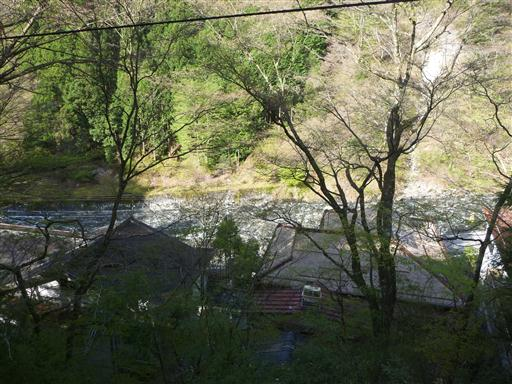
8:28 朝食をとって宿を出発する。今日も快晴だ。
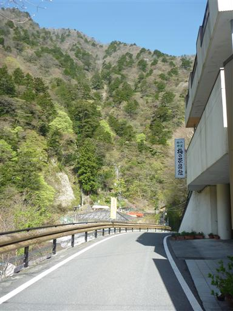
斜面には桜の花が点々と咲いている。
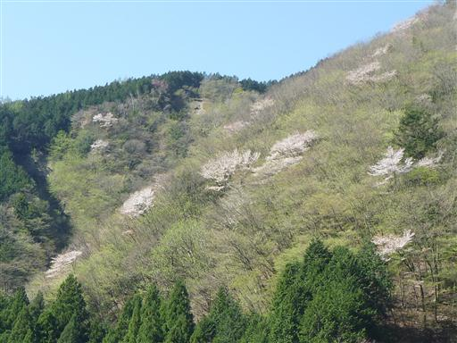
この辺りはちょうど新緑の季節。黄緑色が非常に美しい。
まさに春爛漫の景色だ。
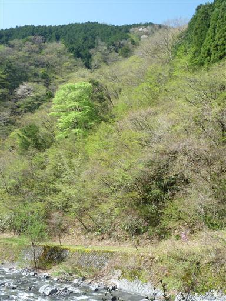
安倍の大滝の入口に到着。標高810m。
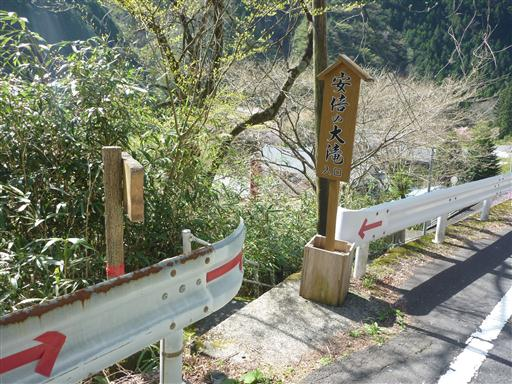
安倍川にかかる吊橋を渡る。
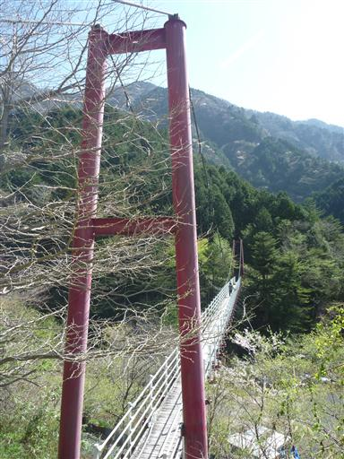
歩行者用の吊橋だが、がっしりした造りなのであまり揺れることはない。
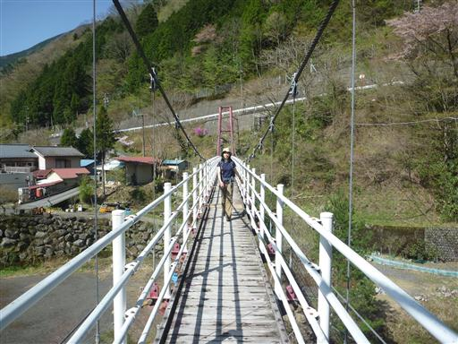
吊橋からの景色。下を流れるのは安倍川だ。
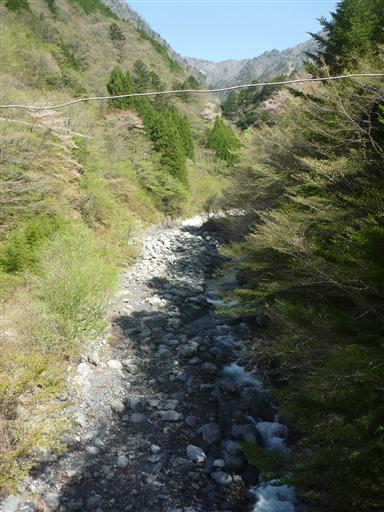
少し先に、もう1つ吊橋がある。
こういった簡易な吊橋では揺れを抑えるために両サイドにケーブルがあるものだが、
この橋にはそれがないため、かなり揺れる。下の沢は流れが速いため、結構怖い吊橋だ。
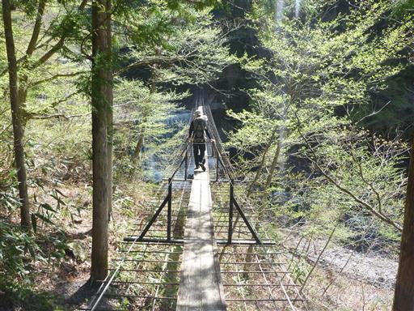
吊橋を過ぎても危うい道が続く。
崖崩れの跡に新しい橋が架けられているが、まだまだ崩れそうだ。
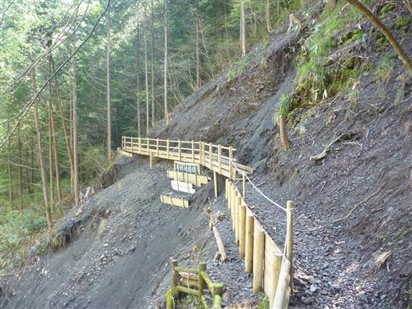
沢を何度か渡りながら遊歩道を歩いていく。

この辺りの渓谷美は素晴らしい。新緑の中を水が激しい音を立てて流れ下っている。

安倍の大滝に到着。落差80mの大きな滝で水量も多い。
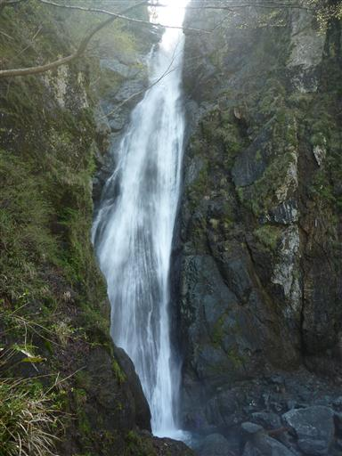
滝壺の近くまで行くことができるが、すさまじい水しぶきですぐにびしょ濡れになってしまう。
安倍川水系で一番の滝と言われるだけあって、迫力のある素晴らしい滝だ。
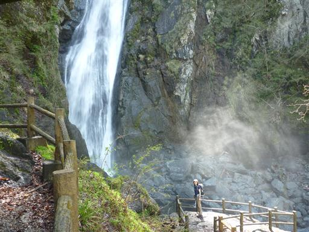
安倍の大滝から少し遊歩道を戻った後、奥大光山への登山道に入る。
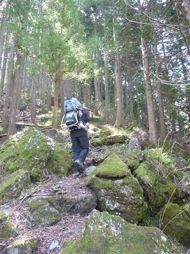
足元にイワカガミが咲いている。この花に出会うのは久しぶりだ。
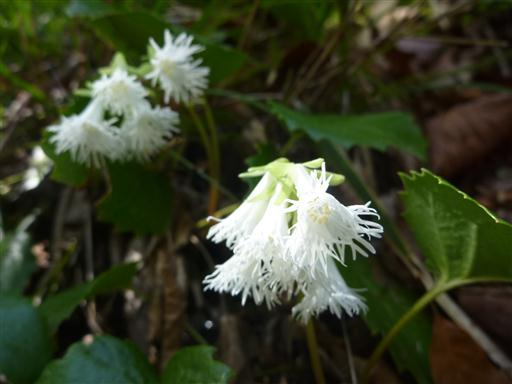
樹木が伐採されているところからは展望が広がる。
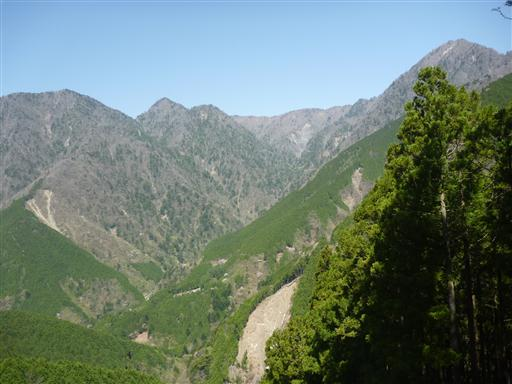
辺りにはツツジや桜の花が所々に咲いている。
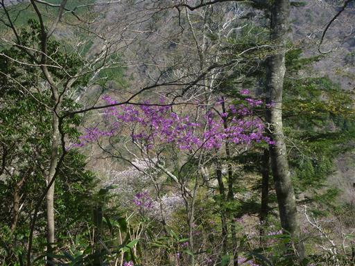
分岐点。右：奥大光山、左：罠…
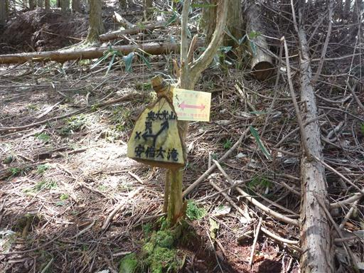
奥大光山に続く大きな尾根に乗る。ここで登山道は90度左に曲がる。
急坂を延々と登って来たため、ここで一休憩。
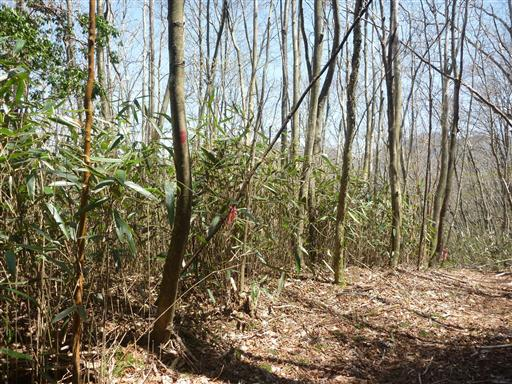
ここから登山道はしばらく下りになる。
尾根についた途端に下り始めるとは登山道の付け方がおかしくないか…？
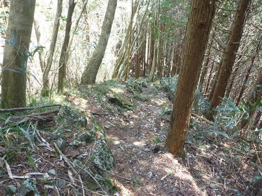
ここからもかなりの急斜面が続く。春なのに気温は異常に高く、体力的に相当つらい。
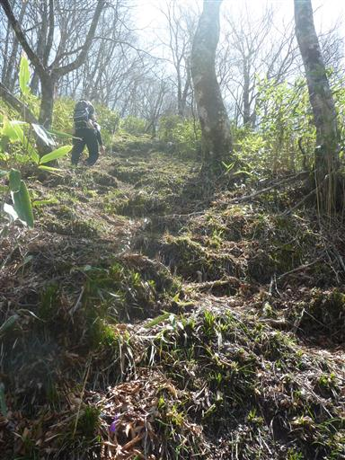
アップダウンを2回ほど繰り返し、ようやく尾根が広くなり緩やかな傾斜になる。
しかし、傾斜が緩やかなのはここだけだ。
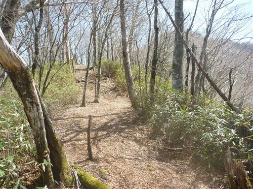
キレットを超える。かなりのやせ尾根で危険なところだ。

キレットを超えると、またもや急傾斜の登山道。ハードな道だ。
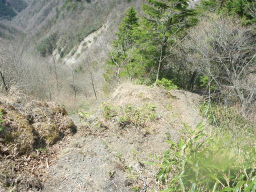
11:40 安倍奥東山稜の稜線に到達する。ここまで来ればもう登りはあまりないが、疲れ果ててしまった。
奥大光山で昼食休憩をとることにする。
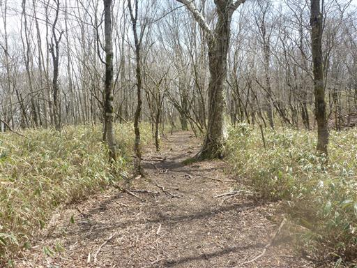
奥大光山から大光山を往復する。背後には存在感のある八紘嶺が聳えている。
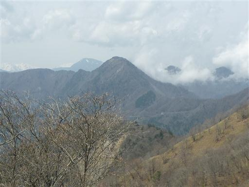
13:06 大光山山頂到着。標高1661m。
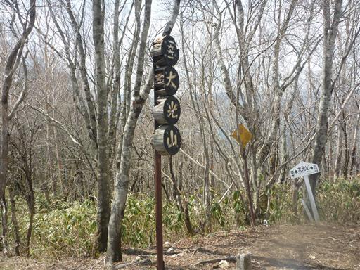
さほど展望の良くない山頂だが、遠くの方に十枚山が見えている。
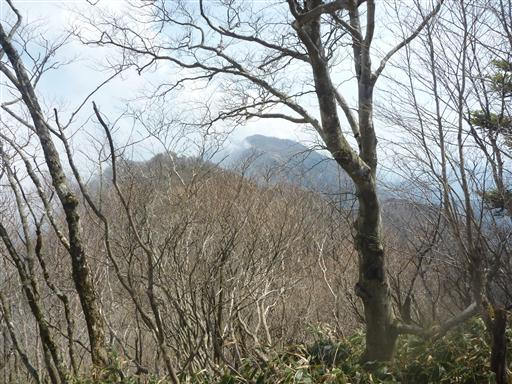
大光山から元来た道を引き返す。ここから安倍奥東山稜を安倍峠まで歩く予定だ。
奥大光山までは誰にも出会わなかったが、この尾根道では所々で人とすれ違う。
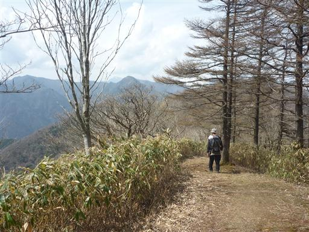
安倍川方面の展望は開けている。反対方向の富士山は雲がかかっていて残念ながら見えない。
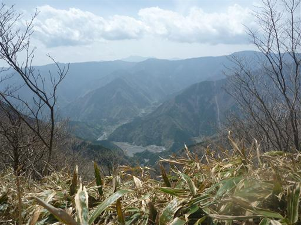
奥大光山を越え、大笹ノ頭を越える。この辺りはヒノキの巨木が点在している。
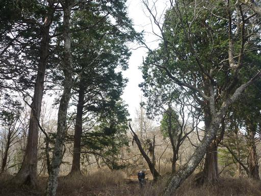
枯れた木の周りに枝が散乱している。
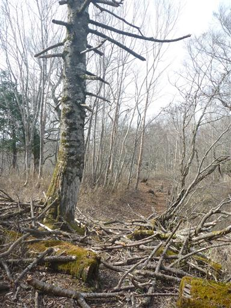
七面山が見えてきた。堂々とした立派な山だ。
一度行く計画を立てたが雨で流れてしまい、それ以降なかなか行く機会がない。
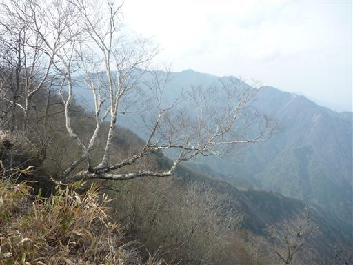
15:35 バラの段到着。標高1648m。
標識には1679mと記載されているが、地形図を見る限りでは間違いだ。
本山行ではここが最後の山頂で、あとは下るのみだ。
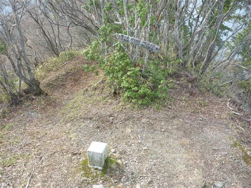
ここまで来ると尾根はかなり痩せてくる。急傾斜の道を淡々と下って行く。
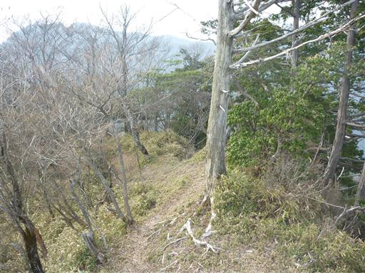
安倍峠が見えてきた。
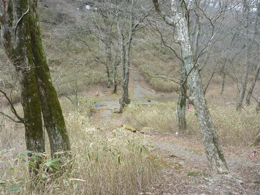
安倍峠に到着。3年ぶりの懐かしい場所だ。
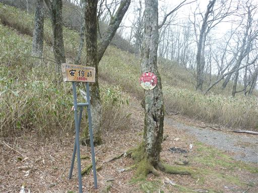
峠には小さな地蔵が祀られている。
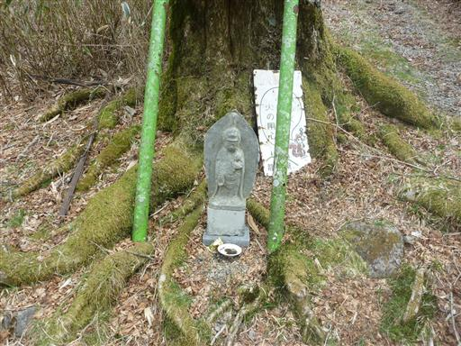
安倍峠旧歩道を歩いていく。
以前来たときは素晴らしい場所だったとの記憶があるが、
夕方に曇り空の下で歩いていると、物寂しい雰囲気が漂う。
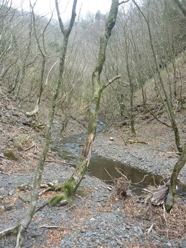
足元に立派なカエルを見つける。のそのそと水の中に逃げて行った。
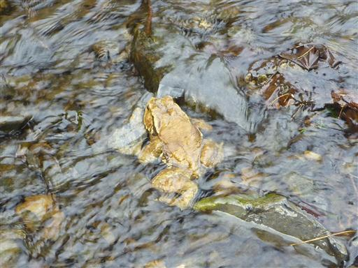
安倍峠旧歩道入口に到着する。
ここから梅ヶ島温泉まで、まだ45分程度下る必要がある。
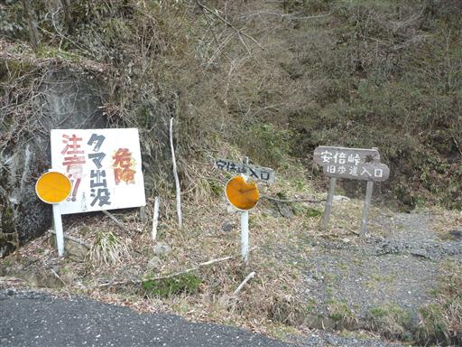
梅ヶ島温泉までは車道も通じているが、道路が崩落しているらしく簡易のバリケードがなされている。
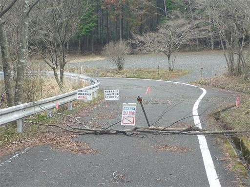
薄暗くてつまらない植林地帯を一気に下りきり、登山口に到着する。
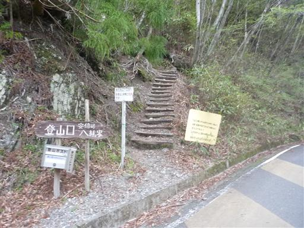
足元には梅ヶ島温泉街を見下ろせる。
旅館・民宿が１０軒の本当に小さな温泉街だ。
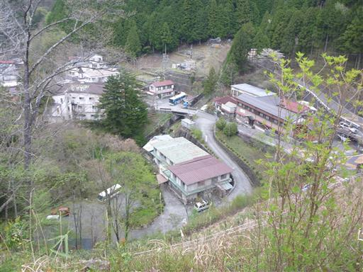
17:18 梅ヶ島温泉到着。標高860m。
奥大光山に着いて以降はあまり景色を見る余裕もなく、久々にかなり疲れた山行だった。
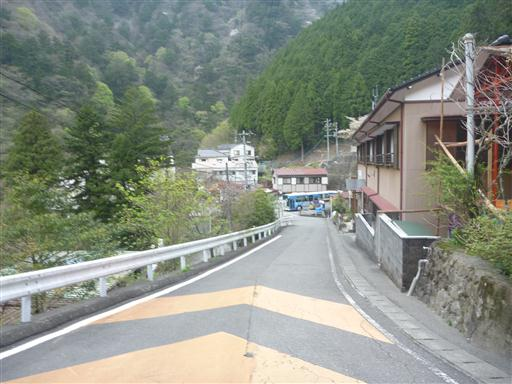